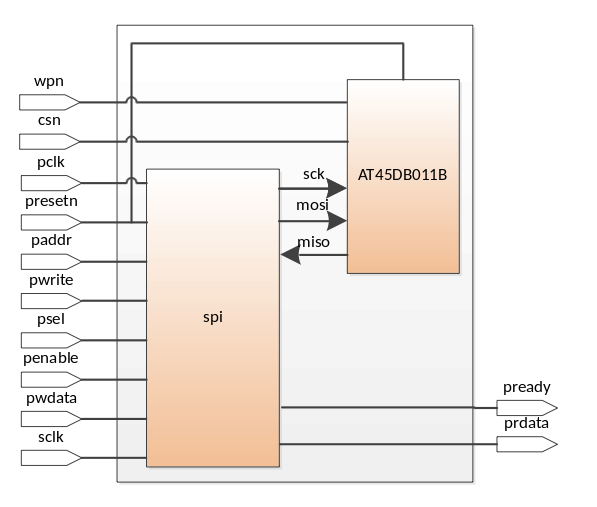

spi_apb_ref - проект, демонстрирующий возможности ehl_lssi с интерфейсом APB при программировании SPI EEPROM памяти AT45DB011B от компании Atmel. Схема подключения Slave устройства представлена далее. В примере демонстрируется запись 1 страницы энергонезависимой памяти через буфер ОЗУ.
Видео ip_spi.flv демонстрирует еще один пример использования ehl_lssi.
В примере uart2usb UART используется в качестве передатчика данных от ПЛИС к терминалу, установленному на персональном компьютере.
Последовательность действий для запуска примера:
1. Выполнить make ip=uart xst для синтеза в ПЛИС, генерации файла прошивки и программирования ПЛИС.
2. Подключить через разъем USB плату ML605 к порту ПК.
3. Открыть программу TeraTerm (или аналог). Выбрать последовательный порт для работы.

4. Задать настройки, соответствующие выбранному режиму работы UART.

5. В терминале циклически будет отображаться последовательность (0?9 a?z).

6. На светодиодных индикаторах ML605 будет отображаться активность интерфейса UART.